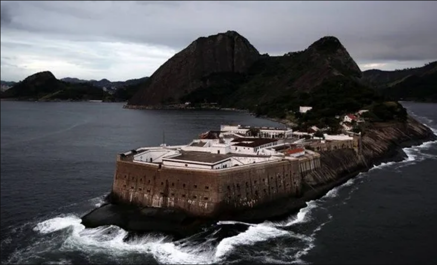
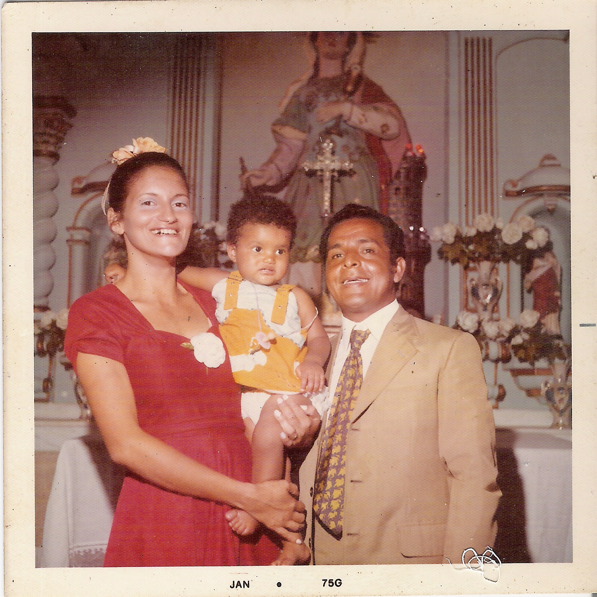
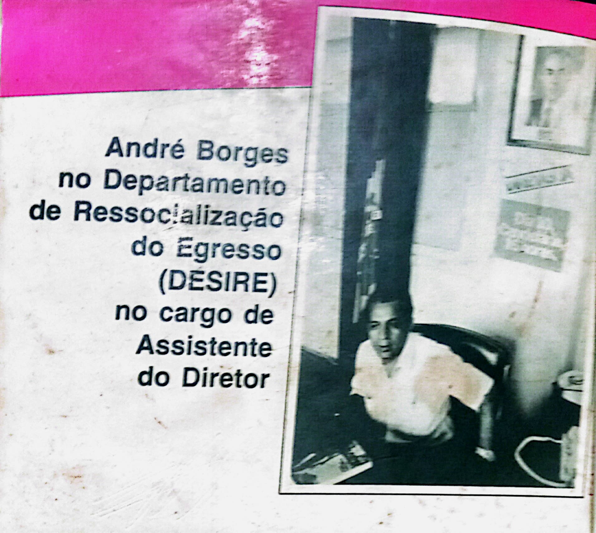

André Borges foi um jornalista brasileiro e membro da ABI (Associação Brasileira de Imprensa).
Ele ficou 21 anos atrás das grades, passando por diversas delegacias e penitenciárias:
-
Lemos de brito(complexo frei caneca):


-
Fortaleza de santa cruz:

Durante sua prisão na fortaleza, André borges se casou:
 -
Ilha grande:(prisão destruida no governo do brizola)


MEMÓRIA DOS TEMPOS TENEBROSOS
ELZA Barreto
Você é um herói dos anos de chumbo amigo poeta! Me partiu o peito ao ler sua carta, mas confesso que ao mesmo tempo me sinto tranquila em ver que você é sobrevivente daqueles tempos tenebrosos!
Reencontrei virtualmente algumas pessoas que militaram conosco na clandestinidade após mais de 30 anos, alguns já se foram e outras ainda vivem, mas perdemos contatos novamente, sem saber o que aconteceu com elas!
Um deles foi exilado no Chile, só fui saber nomes originais de todos(as) após a anistia quando saiu no jornal Classe Operária e na TV! Procurei em páginas e grupos por anos pelos codinomes, com muito custo consegui contatos com poucos(as)! Às vezes me dá uma nostalgia e nó no peito por não ter mais notícias de ambos!
Um abraço solidário para você e aos seus!
carta enviada por elza quando andré já em liberdade
A Ditadura
A trajetória de André Borges é, no mínimo, intrigante. Ele foi preso em abril de 1958, aos 25 anos, por assalto à mão armada.
Durante esse período, ele se tornou um leitor voraz e se conscientizou politicamente. Ele também se tornou o elo entre os presos comuns e os presos políticos, que começaram a ser encarcerados após o golpe de 1964.
Apesar de estar perto de sua libertação, André participou com outros nove detentos em uma fuga da Penitenciária Lemos Brito em 1969.
A fuga foi para participar efetivamente da luta armada e a expropriação de um banco foi o primeiro e único ato político de André, preso dois meses após a fuga.
André permaneceu preso por 21 anos e foi libertado apenas em 1979 após cumprir sua pena.
A fuga
Em 1969, ele liderou uma fuga espetacular da Penitenciária Lemos de Brito, no Rio de Janeiro, junto com outros 11 detentos. Eles cavaram um túnel de 60 metros e escaparam para a rua. André Borges foi o último a sair e ainda ajudou um companheiro ferido.
Da fuga à luta armada
Após a fuga, André Borges se integrou à luta armada contra a ditadura.
Ele se "filiou" ao Movimento Revolucionário 8 de Outubro (MR-8), um dos grupos que participaram do sequestro do embaixador americano Charles Elbrick em 1969.
Ele também atuou na Frente de Libertação Nacional (FLN), uma organização que pretendia criar uma frente única de resistência ao regime.
Vida clandestina
Ele participou de diversas ações armadas, como assaltos a bancos, explosões de bombas e tiroteios com a polícia. Ele chegou a ser ferido duas vezes e teve que se submeter a cirurgias clandestinas. Ele também viveu na clandestinidade, usando vários codinomes e disfarces.
Da luta armada à redemocratização
André Borges sobreviveu à repressão e ao fim da luta armada no início dos anos 1970.
Ele se beneficiou da Lei da Anistia em 1979 e retomou sua vida civil
luta pela anistia Greve de fome:
Após 21 anos de prisão andré foi liberto, 3 dias antes da greve de fome da anistia.
(em uma sexta feira 13 de sorte)

quando se tornou jornalista profissional ele trabalhou em diversos veículos de comunicação
Ele foi um dos fundadores do PDT(um partido trabalhista) e membro do Diretorio estadual do Rio de janeiro. Ele trabalhou como assessor do Desire no governo de Brizola no Rio de Janeiro, onde atuou na área de Administração Penitenciária.
